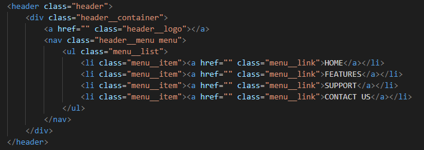
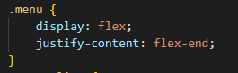
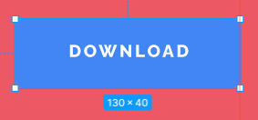
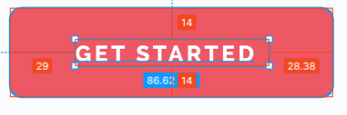
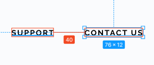
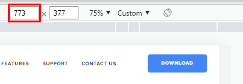
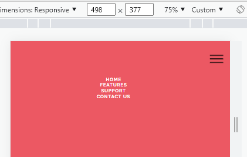
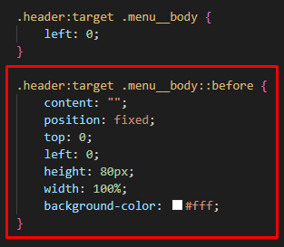
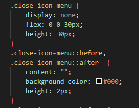
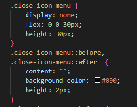

GC Шапка
Анализ блока шапки
Обрисовка блока
Опять же, нам нужно обрисовать блок шапки. Всегда используйте линейку и линии для того, чтобы обрисовывать себе блок - вам так будет гораздо легче.
Итак, нам нужно выделить шапку, понять, какой она высоты для того, чтобы с ней конкретно и комфортно работать.
Для обычно я меряю расстояние от самой высокой точки до верхней границы полотна - это 37 пикселей. Соответственно, я на 37 пикселей опускаю линию от самой нижней точки. Теперь - это высота шапки.

Теперь мы видим эту шапку, теперь она реально уже нам видна. Поэтому, когда вы новичок и вам сложно в уме еще видеть объект, создайте себе линии, обрисуйте объект - вам будет гораздо проще.
И мы начинаем анализ этого блока. По бокам - это полотно. Оно будет расширяться на всю ширину вьюпорта, в который попадет, то есть во всю ширину экрана устройства. Далее, следующий объект - это у нас ограничивающий контейнер, который должен быть внутри шапки, который ограничит контент на определенном уровне - это 1057 пикселей, как мы уже обозначили.

Логотип, меню, кнопка
Далее у нас есть логотип, меню и кнопка. И тут все завязано на этом красном декоративном элементе, который установлен под кнопкой.

Почему там все завязано на него? Потому что, вот здесь, если считать справа, меню расположено после этого объекта и оно не должно на него залезать. Поэтому, у нас тут все уже идет в совокупности с главным блоком, над которым надвисает шапка.
То есть, когда вы видите такую ситуацию, в которой у вас есть вот такой декоративный элемент и он влияет на шапку, то это первый сигнал того, что шапка у вас абсолютно фиксирована, в зависимости от того хотим мы, чтоб шапка путешествовала по сайту либо не хотим. И, соответственно, читая такой дизайн вы должны сразу понимать, что шапка, но в данном случае мы будем делать абсолютом, она будет нависать над нашим первым блоком.
Соответственно, это расстояние от левого края декоративного элемента до границы ограничивающего контейнера нам очень важно. Мы его потом померяем и сделаем.
Но, вернувшись к анализу конструкций, мы должны теперь четко понимать, что у нас вот так должны быть расположены блоки. То есть, блок с кнопкой должен быть вот такой ширины для того, чтобы расположить меню вот таким образом.

Я принимаю такое решение для организации структуры в шапке, по-моему оно неплохое. Давайте сверстаем нашу шапку.
Верстка
Оболочка страницы
Первым шагом создаем оболочку <div class="wrapper"> в контейнере <body>. Это очень полезная оболочка - она нужна для очень многих вещей. Добавляем к ней стили:
-
overflow: hidden;
- overflow Управляет отображением содержания блочного элемента, если оно целиком не помещается и выходит за область заданных размеров.
- hidden Отображается только область внутри элемента, остальное будет скрыто.
-
display: flex;
- display Многоцелевое свойство, которое определяет, как элемент должен быть показан в документе.
- flex Элемент ведёт себя как блочный и выкладывает содержимое согласно флекс-модели.
-
flex-direction: column;
- flex-direction Задаёт направление основных осей в контейнере и тем самым определяет положение флексов в контейнере.
- column Главная ось располагается вертикально и направлена сверху вниз. Прибиваем подвал к низу экрана
-
min-height: 100%;
- min-height Задаёт минимальную высоту элемента.
- 100% Оболочка занимает минимум всю высоту окна браузера
Структурные блоки
Создаем <header> с классом header
Создаем <main> с классом main
Создаем <footer> с классом footer
Тут же можно обратиться к <main> и позволить ему увеличиваться для того, чтобы он расширялся и прижал <footer> книзу.
- flex
- Сокращённое свойство, которое позволяет указать параметры элемента, чтобы он эффективно заполнял доступное пространство. Элементы могут быть растянуты пропорционально с учётом заданного соотношения или сжаты, чтобы целиком вместить все элементы без переносов в одну строку.
flex: none | [ flex-grow flex-shrink? || flex-basis ]
- flex-grow
- Определяет, сколько пространства может занимать флекс внутри контейнера. В качестве значения принимаются числа, они задают пропорции каждого флекса. К примеру, если для всех элементов установлено значение 1, то они получатся равного размера. Если какой-то элемент получил значение 2, то его размер будет в два раза больше остальных.
- 0 Значение по умолчанию
- flex-shrink
- Устанавливает коэффициент сжатия флексов в контейнере и задаёт, насколько элемент будет уменьшаться по отношению к другим флексам, чтобы разместить все элементы в одну строку.
- 1 Значение по умолчанию
- flex-basis
- Определяет основу флекса, которая является начальным размером элемента. Похоже на свойства width и height, к которым добавляется содержимое элемента.
- auto Указывает автоматический размер, основанный на содержимом элемента.
Такой прием позволил main увеличиваться и сильно влиять на footer, отправив его вниз и прибив к низу страницы.
Отлично, основное сделали и можем продолжать - возвращаемся к header.
header
Создаем здесь ограничивающий контейнер по БЭМ-формуле
В данном случае блок у нас header, элементом выступает строка из селектор-атрибута [class*="__container"]. Соответственно, содержимое этого DIV уже ограничены по ширине.
Верстка шапки
Создание БЭМ-структуры
Дальше помним, как мы разделили блоки шапки и следует уже решеннную в уме задачу в макете перенести в html.
Для логотипа создадим первый объект logo и сделаем его ссылкой.
Второй объект у нас будет menu. Создадим его через <nav>, который по семантике означает навигацию. И здесь же создадим отдельный БЭМ-блок menu
Переходим в блок menu и создаем список меню menu__list с пунктами menu__item и ссылками для каждого пункта menu__link, в которые переносим названия ссылок из макета

Меню у нас готово. Дальше у нас будет блок с кнопкой. Назовем его header__button. А внутри у нас уже будет кнопка button. Как видно из макета - это будет кнопка загрузки какого-то документа "DOWNLOAD", поэтому сделаем ее ссылкой. И, если еще раз проанализировать макет, то мы видим, что у нас еще есть такие же по стилю кнопки, только красные. Поэтому, заданные сейчас стили мы будем применять ко всем остальным кнопкам, но к этой добавим модификатор -blue, чтобы она отличалась
Логотип, меню, кнопка "DOWNLOAD"
Структурную подготовку сделали и теперь достанем наш логотип.
Для выгрузки картинок из Figma выделяем изображение и видим, что это векторное изображение
Нажимаем Export и выбираем формат SVG. Дальше жмем Export Group 2
Figma автоматически загрузила наше изображение на компьютер в Загрузки. Достаем его оттуда и перемещаем в нашу папку img и переименовываем в logo
Помещаем наш логотип в html и обязательно заполняем атрибут alt, чтобы обеспечивать лучшую доступность

В браузере у нас появился логотип, текст меню и текст кнопки. Переходим в css, чтобы все стилизировать.
Перенос классов в css
У меня настроен eSSTRACTOR, выделяю весь нужный код header, копирую классы Ctrl+Shift+X и собственно переношу все в css Ctrl+V
Стилизация
Flexbox для контейнера и блоков
Тут у нас несколько вариантов: мы можем работать с вариантом на Grid и с вариантом Flexbox. Для новичков проще Flexbox. Так и будем работать.
Дальше сделаем такое решение. Как мы выяснили, блок с кнопкой у нас должен быть фиксированной ширины из-за декора, а вот блок меню постараемся сделать так, чтобы он максимально расширялся и создавал пространство после логотипа. А уже внутри самого блока меню, мы само меню сместим в нужную позицию. Из этого плана и будем исходить

Сейчас в браузере наши объекты расположены плотно друг за другом, согласно Flex-модели, которую мы задали в .header__container
Позволяем .header__menu максимально расширяться
А, вот .header__button нужно мерять. Опять же, использую F, рисую и получаю 252 пикселя. По отношению к другим флексам блок не должен расширяться или сжиматься. Так и запишем
Проанализируем с помощью DevTools, что у нас получается. Видим наш ограничивающий контейнер и наша flex-сетка. Меню я позволил расширяться, а кнопка фиксированной ширины. Получилось, как надо

Flexbox меню
Дальше само menu разместим справа

- justify-content
- Определяет, как браузер распределяет пространство вокруг флекс-элементов вдоль главной оси контейнера. Это делается после того, как применяются размеры и автоматические отступы, за исключением ситуации, когда по крайней мере у одного элемента flex-grow больше нуля. При этом не остаётся никакого свободного пространства для манипулирования.
- flex-end Флексы прижаты к концу строки.
То же самое нужно сделать с кнопкой, чтобы она тоже разместилась справа
Высота шапки
Следующий шаг будет построение высоты шапки. Замеряем ее в макете с помощью F. Получаем 114 пикселей
Можно добавить значения этого свойства для ограничивающего контейнера шапки .header__container
- align-items
- Выравнивает флекс-элементы внутри контейнера в перпендикулярном направлении
- center Флексы выравниваются по центру линии поперечной оси.
Теперь шапка у нас макетная - она по высоте 114 пикселей, все объекты расположены по центру этой высоты. Таким образом, легко и просто мы добиваемся макетной структуры и внешнего вида.
Сами пункты меню тоже сделаем с помощью флексов и выравниваем их
Теперь можем стилизовать и сами объекты.
Стилизация кнопки
Кнопки у нас по сайту все одинаковы и отличаются только цветом, поэтому я начну сначала с размеров. Интересует меня высота - это 40 пикселей.

Но, из опыта показывает, что меньше строк кода занимает строить кнопку не через высоту, а через отступы. В итоге, посчитав строчки кода, так получилось более оптимизировано. Поэтому, давайте мы здесь делаем тоже самое.
Итак, у нас есть кнопка .button. Выделяем текст кнопки в Фигме, прожимаем вкладку Inspect скроллим в самый низ и здесь у нас представлен код css. Копируем и добавляем в свои стили нужные на этом этапе свойства текста с учетом того, что мы решили строить кнопку не через высоту, а через отступы, избавляясь от лишних строк позиционирования
С текстом разобрались, теперь займемся паддингами. Сразу проанализируем другие кнопки. В принципе, по ширине можно задать общий отступ в 30 пикселей. По высоте оставим по 14 пикселей, что суммарно с высотой строки 12 пикселей дает нужную высоту кнопки 40 пикселей

Добавляем свойство в стили кнопки
Осталось только визуализировать кнопку и добавить цвет фона background-color, а также здесь присутствуют небольшие закругления углов кнопки border-radius. Так как большинство кнопок у нас красного цвета, ставим его в этот блок, как основной, а голубой цвет для этой кнопки задаем через модификатор .button-blue.
Таким образом, мы только создали полноценный БЭМ-блок с независимым блоком с модификатором.
Также, здесь стоит добавить display: inline-block;, потому что это ссылка и она строчная. Хотя, конкретно в этом случае, мы можем не добавлять, т.к. конкретно эта кнопка является flex-элементом. Но, на всякий случай, добавить стоит потому что она может и не быть flex-элементом где то в другом месте.
- text-transform
- Управляет преобразованием текста элемента в заглавные или прописные символы.
- uppercase Все символы текста становятся прописными (верхний регистр).
Почему через модификатор? Привыкайте делать качественно, вдруг синяя кнопка будет не только в header, но и где-то еще. Да, в этом макете не будет, но привыкайте сразу делать надежно.
Итак, кнопка у нас появилась - все, как надо. Дальше, в макете у нас нет никаких :hover - это плохо. Добавим :hover и что мы можем с ним сделать? Мы можем немножко изменить background-color.
Это все уже отсебятина - тут вы включаете творчество и делаете все на свое усмотрение. Но, я рекомендую делать :hover, делать эту отсебятину - это классный навык. Заказчик вам скажет, скорее всего, за это: "Спасибо".
Добавляем немного магии с помощью transition, чтобы все было плавно, красиво, стильно, модно, молодежно. Теперь анимация плавная и замечательная.
transition
Универсальное свойство, которое позволяет одновременно задать значения transition-property, transition-duration, transition-timing-function и transition-delay. Устанавливает эффект перехода между двумя состояниями элемента, они могут быть определены с помощью псевдокласса :hover или :active, а также динамически через JavaScript.
- transition-property
- Устанавливает имя стилевого свойства, значение которого будет отслеживаться для создания эффекта перехода.
- none Никакое свойство не задано.
- all Все свойства будут отслеживаться.
- свойство Название стилевого свойства, регистр при его написании не учитывается. При указании нескольких свойств они перечисляются друг за другом через запятую.
- transition-duration
- Задаёт время в секундах или миллисекундах, сколько должна длиться анимация перехода до её завершения.
- 0s Значение по умолчанию - означает, что никакой анимации нет, переход происходит мгновенно.
- transition-timing-function
- Устанавливает, насколько быстро должно изменяться значение стилевого свойство для которого применяется эффект перехода.
- ease Анимация начинается медленно, затем ускоряется и к концу движения опять замедляется.
- transition-delay
- Устанавливает время ожидания перед запуском эффекта перехода.
- 0s Запускает анимацию сразу же.
Стилизация меню
menu у нас сейчас прижалось к правому боку и нам нужен правый отступ в 38.26 пикселей. С него и начнем, округлим до 40 пикселей. При этом, между пунктами меню у нас также 40 писелей

Убьем сразу двух зайцев и зададим для .menu__item правый отступ в 40 пикселей, получая нужное расстояние и от декора и между пунктами меню
Следующим делом мы сверстаем сами пункты меню
line-height у нас в макете имеет фиксированную высоту, но так не стоит делать. Лучше скалькулируем - размер шрифта здесь 10 пикселей, разделим его на заданную высоту строки 12 пикселей и получим коэффициент 1.2. Так и стоит записывать line-height, чтобы он у нас был относителен. Если мы вдруг поменяем размер шрифта, то line-height подстроится.
Отступы между самими пунктами мы уже выставили с помощью margin-right в 40 пикселей. Получилось просто и надежно. Естественно, в момент адаптива мы будем это все дело как-то менять.
В принципе, шапка у нас в ПК-версии, фактически, готова. Дальше под ней мы будем делать декор и у нас все должно будет срастись да с макетом.
Движемся дальше и то, что нам осталось сделать с шапкой - это ее зафиксировать.
Позиционирование шапки
Мы выяснили, что шапка у нас абсолютно позиционирована, т.е. не зафиксирована. Соответственно, z-index также зададим какой-то побольше, чтобы она наверняка располагалась над остальными потоками.
- position
- Устанавливает способ позиционирования элемента относительно окна браузера или других объектов на веб-странице.
- absolute Абсолютное позиционирование. Указывает, что элемент абсолютно позиционирован, при этом другие элементы отображаются на веб-странице словно абсолютно позиционированного элемента и нет. Положение элемента задаётся свойствами left, top, right и bottom.
Также, на положение влияет значение свойства position родительского элемента. Если у родителя значение position установлено как static или родителя нет, то отсчёт координат ведётся от края окна браузера. Если у родителя значение position задано как relative, то отсчёт координат ведётся от края родительского элемента.
Теперь шапка у нас "забсолючена" и повисла в воздухе - то, что нам и нужно. Займемся адаптивом.
Адаптив
/* PC */ @media (max-width: 1087px)
Для начала поговорим об ограничивающем контейнере и адаптивной адаптивной сетке. Есть два вида адаптива = это отзывчивость и по breakpoint. Для новичков я обычно учу делать по breakpoint. Вообще, в своих проектах я использую, сугубо, отзывчивость, но она может показаться слишком сложной для новичков.
Первый breakpoint у нас будет 1057 пикселей. Но, к ограничивающему контейнеру нужно сразу добавить отступы безопасности. Они, как правило, по 15 пикселей слева и справа. Соответственно, нам нужно расширить наш ограничивающий контейнер на 30 пикселей: 1057 + 30 = 1087.

На этом первом breakpoint мы сузим ограничивающий контейнер до 970 пикселей.
Смотрим - вот они отступы безопасности. То есть viewport не прикасается к контенту и срабатывает на нужном breakpoint. В частности, на кнопке здесь хорошо видно - при ширине 1100 пикселей, приближающейся к заданному breakpoint остается заданный отступ. Дальше breakpoint срабатывает и контейнер меняет ширину, тем самым мы адаптируем сайт. Если что-то ломается на этом разрешении, то на этом breakpoint мы и будем менять.

/* TABLET */ @media (max-width: 991.98px)
Следующий breakpoint у нас 992 пикселя - это планшетное расширение. Меняем ширину на 750 пикселей

И здесь видим, что у нас уже начались проблемы и уже здесь, не дойдя до 750 пикселей, нам нужно шапку адаптировать на втором breakpoint в 992 пикселя
Давайте сразу этим и займемся, а потом продолжим писать сетку для мобайл 768 пикселей

Почему дробные числа? Все дело в том, что тот же Ipad-планшет, он имеет ширину в обычном состоянии, не в альбомном, 768 пикселей. И, если здесь поставить 768, то стили для мобилок появятся уже на планшете. Поэтому приходится немножко уменьшать на размер, чтобы в действительности стили заработали именно на устройствах меньше, чем планшеты. Та же история и на breakpoint в 992 пикселя для ПК - мы пишем 991.98 пикселей.
Возможно, мы добавим еще один breakpoint для маленьких мобилок. Пока оставим, как есть и займёмся нашей проблемой в нашей шапке. Конечно, было бы нагляднее, если бы мы видели декор, который у нас в макете присутствует, но попробуем и без него обойтись.
Ремонт @media (max-width: 991.98px)
В момент, когда у нас объекты не помещаются, мы должны искать варианты, где нам найти место. Процесс адаптива, он связан с тем, что мы ищем свободное место, ищем пробелы и удаляем их, что-то уменьшаем, но при этом должен быть баланс между удобством пользования и размещением объектов.
Что я могу сделать в этой ситуации? У меня здесь довольно широкий объект под кнопку. Соответствено, который заложен под декор.

Но, в процессе адаптива я этот декор сдвину - он у меня будет выступать не на 122 пикселя, а меньше.
Поэтому, на втором breakpoint я могу уменьшить этот объект, скажем, на сто пикселей - поставлю 170.

Потом мы, конечно, это подгоним. Вот мой объект в 170 пикселей. Мы видим, что меню поместилось, но, так скажем, опасно.

Мы можем еще поработать над свободным местом, поигравшись вот здесь с отступом - 40 пикселей довольно большой отступ, можно его урезать


Отлично - я считаю, что таким образом и пользоваться удобно и мы все эти объекты разместили.
Также, уже на планшете, шапка в 114 пикселей выглядит довольно громоздкой по высоте. Поэтому, почему бы нам это дело не поправить. И уже что-то вырисовывается

И, раз у нас столько много записей для шапки на этот breakpoint, то давайте мы вынесем все это дело в отдельный breakpoint. Когда мы работаем со сборщиками, этот процесс автоматизирован и группировка медиа-запросов происходит автоматически. Тут, к сожалению, у нас такой возможности нет, поэтому мы вручную группируем
При этом помним, что все объекты, которые изменяли для адаптива, должны находиться в стилях выше медиа-запросов.
/* MOBILE */ @media (max-width: 767.98px). "Бургер"
Последний breakpoint и здесь нам уже нужно что-то кардинально менять. Сейчас мне нужно придумать - что делать с меню? Как я уже говорил, я не буду здесь использовать java script - соответственно, меню "бургер" у меня здесь не будет использоваться. В то же время, давайте попробуем сделать меню "бургер", но без java-script
Что мне для этого нужно? Мне нужен сам "бургер". Поэтому я немножко перепишу здесь меню. Вызову свой сниппет
Потому что мне нужно кнопка бургера, скопируем отсюда строку "button" и добавим ее пока без изменений, в качестве заготовки, в наш html в блок "header__button"

И, также мне надо "menu__list" обернуть в "menu__body" - немножко поменяю структуру. У нас было
Теперь оба блока будут собраны таким образом
Теперь при нажатии на кнопку "button", которую мы добавили в "header__button", у меня будет открываться ящик "menu__body". Я попробую это реализовать без java-script.
Поэтому, я поменяю <button> на ссылку <a> и поставлю хеш href="#menu".
Для <nav> я добавлю id="menu"
Надеюсь, у меня все получится, а для вас будет дополнительная полезность. И сейчас мне нужно сверстать сам "бургер". Поскольку вместо <button> мы используем ссылку <a>, то класс menu__icon мне будет не нужен - уберем его. Также уберем отсюда type="button" и в содержимое ссылки вставим <span>
Из этого я сейчас буду лепить "бургер" по классу icon-menu. Мне нужно создать три полоски бургера
Создание "бургера"
Начнем с того, что мы имеем родительский блок header__button с исходным размером 252*40
В блоке header__button мы расположили два братских блока: блок кнопки "DOWNLOAD" button button-blue размером 130*40 и блок будущего "бургера" icon-menu, который еще не имеет ширину, а высота определяется высотой родительского блока в 40 пикселей


С этого и начнем. Прежде всего, требуется зафиксировать наш "бургер" на месте справа от кнопки. Поэтому, задаем для icon-menu относительное позиционирование
- position
- Устанавливает способ позиционирования элемента относительно окна браузера или других объектов на веб-странице.
- relative
- Относительное позиционирование. Положение элемента устанавливается относительно его исходного места. Добавление свойств left, top, right и bottom изменяет позицию элемента и сдвигает его в ту или иную сторону от первоначального расположения.
Сразу зададим размеры для icon-menu - ширину через flex, высоту через height
- flex
- Сокращённое свойство, которое позволяет указать параметры элемента, чтобы он эффективно заполнял доступное пространство. Элементы могут быть растянуты пропорционально с учётом заданного соотношения или сжаты, чтобы целиком вместить все элементы без переносов в одну строку.
- flex: none | [ flex-grow flex-shrink? || flex-basis ]
- Значение по умолчанию
- flex-grow:0
- flex-shrink:1
- flex-basis:auto
- flex-grow
- Определяет, сколько пространства может занимать флекс внутри контейнера. В качестве значения принимаются числа, они задают пропорции каждого флекса. К примеру, если для всех элементов установлено значение 1, то они получатся равного размера. Если какой-то элемент получил значение 2, то его размер будет в два раза больше остальных.
- Значение по умолчанию 0
- flex-shrink
- Устанавливает коэффициент сжатия флексов в контейнере и задаёт, насколько элемент будет уменьшаться по отношению к другим флексам, чтобы разместить все элементы в одну строку.
- Значение по умолчанию 1
- flex-basis
- Определяет основу флекса, которая является начальным размером элемента. Похоже на свойства width и height, к которым добавляется содержимое элемента.
- Значение по умолчанию auto
Прописываем данные свойства для icon-menu.
- Позиционируем его фиксированно относительно его исходного места position:relative.
- Флекс внутри контейнера не зависит от размера других флексов flex-grow:0
- При размещении элементов в одну строку, элемент не будет уменьшаться по отношению к другим флексам flex-shrink:0
- Ширина флекса будет 30 пикселей flex-basis:30px
- Высота блока будет 18 пикселей height:18px
Проверим, что получилось
Отлично, справа от кнопки появился прямоугольник 30*18 блока нашего "бургера" icon-menu.
Займемся созданием трех полосок. Они, по факту, являются содержимым нашей ссылки бургера. Чтобы можно было работать с этим содержимым, мы заранее поместили в него элемент <span> и теперь можем к нему обращаться. Заложим свойства наших будущих полосок для icon-menu span : толщина 2 пикселя черного цвета
Вернемся к icon-menu - добавим ему свойства и создадим флекс, который визуализируется в полоску, благодаря свойствам, заданным для icon-menu span

- display
- Многоцелевое свойство, которое определяет, как элемент должен быть показан в документе.
- flex
- Элемент ведёт себя, как блочный и выкладывает содержимое согласно флекс-модели.
- flex-direction
- Задаёт направление основных осей в контейнере и тем самым определяет положение флексов в контейнере.
- column
- Главная ось располагается вертикально и направлена сверху вниз.
- justify-content
- Определяет, как браузер распределяет пространство вокруг флекс-элементов вдоль главной оси контейнера. Это делается после того, как применяются размеры и автоматические отступы, за исключением ситуации, когда по крайней мере у одного элемента flex-grow больше нуля. При этом не остаётся никакого свободного пространства для манипулирования.
- space-between
- Флексы равномерно распределяются по всей строке. Первый и последний элемент прижимаются к соответствующим краям контейнера.
И дальше будем работать с псевдоэлементами, чтобы вывести еще 2 полоски
- ::before
- Применяется для отображения контента до содержимого элемента, к которому он добавляется. Работает совместно со свойством content. По умолчанию ::before создаёт строчный элемент.
- ::after
- Используется для вывода контента после содержимого элемента, к которому он добавляется. Работает совместно со свойством content. По умолчанию ::after создаёт строчный элемент.
- content
- Используется с псевдоэлементами ::before и ::after для вставки сгенерированного содержимого. Содержимое при этом должно браться в двойные или одинарные кавычки.
Таким образом, мы задали псевдоэлементам свойства сгенерировать полоску идентичную, созданной нами в icon-menu span. В результате ::before выводит полоску ДО содержимого, которое является такой же полоской, а ::after выводит свою полоску ПОСЛЕ содержимого.
Теперь у меня есть ссылка в виде трех полосок, которая по клику обращается к объекту с id="menu".

Естественно, сейчас доделаем стили, чтобы смотрелось красиво и выровняем наш "бургер" по вертикали - добавим для header__button свойство align-items: center

И сделаем левый отступ от иконки icon-menu через margin

Теперь отлично получилось

Естественно, пока нам нужно "бургер" скрыть.
/* MOBILE */ @media (max-width: 767.98px). Адаптив "Бургера"
Для того, чтобы бургер появлялся только на мобилках и был скрыт на ПК и планшетах, мы всю нашу конструкцию переносим в медиа-запрос для breakpoint на устройствах меньше 767.98 пикселей. А в стилях ПК и планшетов убираем icon-menu через display: none
Проверяем и видим, что наш "бургер" появляется только при достижении ширины устройства меньше 767.98 пикселей


Мы видим, что бургер появляется в нужный момент и в этот момент меню нам нужно скрыть. Поэтому нам нужно меню, а именно menu__body, скрыть на разрешении меньше 768 пикселей.
Мы его не скрываем, а просто не устанавливаем для верхних разрешений и фиксим через position: fixed на разрешении меньше 768 пикселей. И это логично, т.к. этот класс мы создавали именно под "бургер"

- position
- Устанавливает способ позиционирования элемента относительно окна браузера или других объектов на веб-странице.
- fixed
- Фиксированное позиционирование. По своему действию это значение близко к absolute, но в отличие от него привязывается к указанной свойствами left, top, right и bottom точке на экране и не меняет своего положения при прокрутке веб-страницы.
Зададим координаты с размерами и посмотрим, что у нас получается. У нас меню теперь фиксировано к верху и левому краю, другими объектами не зажимается. Но, сами объекты при меньшем разрешении, все-равно не очень получается уместить
Сейчас мы немного подкорректируем кнопку "DOWNLOAD". Обратимся к button, который находится внутри header__button и немного изменим внутренние отступы, которые у нас сейчас по 14 и 30 пикселей и проверим. Все-равно, не очень помещаемся

Мы можем уменьшить логотип, но тоже не очень хорошо. Поступим следующим образом, пусть это не так нужно сейчас, как хочу показать вам один лайфхак, что в таких ситуациях можно делать. Уберем полностью этот медиа-запрос @media (max-width:767.98px) , который мы только что создали для .header__button .button.
Когда логотипы состоят из иконки и надписи, то надпись мы можем скрыть при определенном разрешении. Значит, 40 пикселей у нас логотип

Добавляем в медиа-запрос header__logo, в верхних разрешениях мы его не стилизовали, так там было все, как надо. Здесь задаем ему размер 40 пикселей и делаем логотип независимым от других объектов через flex. И через overflow сделаем так, чтобы отображалась только область внутри этого размера, а остальное будет скрыто. И все у нас получилось - все элементы прекрасно помещаются
Кнопку "DOWNLOAD" я не советую убирать. Это, судя по всему, самая важная кнопка сайта, поэтому я не советую куда-то прятать ее. Вот такой лайфхак с тем, что мы прячем кусок логотипа, он очень юзабельный
Единственное, что - его можно сделать на еще меньшем разрешении в 479.98 пикселей на маленьких мобилках, т.к. на обычных мобилках у нас еще есть место, а потом мы прячем. Поэтому, используем еще один breakpoint. Подпишем его /* MOBILE SMALL */, т.е. маленькие мобилки
В итоге, все-таки у нас бургер есть и теперь сверстаем само меню.
Адаптив меню
Обращаемся к menu__body на разрешении меньше 767.98 пикселей. Стоит отметить, что мы сейчас все придумываем, т.к. у нас нет макета открывающегося меню и нам нужно думать самим какой-то стиль.
Давайте фон попробуем сделать розовым - добавим свойство в уже имеющийся медиа-запрос. Сюда же, соответственно, .menu__link у нас будет белым
Для всего списка меню menu__list главную ось расположим вертикально сверху вниз, флексы выровняем по центру строки и, также, выровняем все флексы вдоль поперечной оси.
Смотрим, что получилось
Теперь отступы. Слева и справа сделаем по 15 пикселей, сверху большой должен быть - сделаем 90 пикселей, снизу - 30 поставим.

Дальше, юзабилити - очень увеличиваем размер шрифта. У нас есть место - дайте возможность пользователю удобно пользоваться вашим меню "бургером". Поэтому в menu__link на этом медиа-запросе сделаем шрифт в 20 пикселей.

И, ну естественно какой-то отступ нужен для самих пунктов. Ранее в menu__item у нас был задан для них только правый margin в 30 пикселей, т.к. элементы располагались горизонтально. Теперь же, у нас вертикальный список, поэтому боковой отступ убираем, а устанавливаем нижний в 25 пикселей. Таким образом, раздвинем пунты между собой по вертикали
У последнего элемента можно отступ отобрать через псевдокласс :last-child
- :last-child
- Псевдокласс задаёт стиль последнего элемента в группе братских элементов (имеющих одного родителя).
Настройка адаптива для логотипа
Итак, меню мы сделали и теперь нам нужно доставать логотип наверх.

Поскольку логотип такого же цвета, как мы придумали розовый для меню, нам придется отказаться от розового цвета для выпадающего меню.
Также, нам нужно достать кнопку "DOWNLOAD", которая button. В принципе, мы можем весь header__button, если добавим ему относительное позиционирование и z-index, как только добавили для логотипа
Осталось с цветом разобраться. Поменяем фон в menu__body просто на белый, цвет шрифта в menu__link изменим на черный. Так будет лучше всего, чем долго играться с цветами и потом к этому же и прийти
Отлично, меню у нас есть - теперь осталось сделать его открытие-закрытие.
Напоследок, для анимации, повесим на ссылки в menu__link псевдокласс :hover. Установим для них подчеркнутый текст принаведении во всех расширениях экрана
Открытие меню
Изначально нам нужно скрыть меню - добавим display: none в menu__body. Это один способ
Второй способ. Уберем опять display: none, который мы только что установили и поработаем с расположением. Сделаем left: -100%, т.е. полностью задвинем меню за левый край. В итоге получаем ту же картину.
Собственно, в момент, когда мы нажимаем на "бургер" и обращаемся по id к этому объекту, он получает псевдо-класс :target. Мало кто про это знает, но так есть.
- :target
- Для перехода к выбранному фрагменту документа, в адресе пишется символ # и указывается имя идентификатора. К примеру, в адресе http://www.w3.org/TR/css3-selectors/#target-pseudo происходит переход к элементу, атрибут id которого задан, как target-pseudo. Такая запись адреса называется «целевой элемент». Псевдокласс :target применяется к целевому элементу. Иными словами, к идентификатору, который указан в адресной строке браузера.
По :target мы можем вернуть наш объект при нажатии на "бургер"
Проблема заключается в следующем - как нам теперь закрыть меню? А пока закончим с открытием меню - добавим интерактива. С помощью transition сделаем, чтобы меню не просто открывалось, а выезжало из-за левого края

Меню у нас выезжает и теперь надо решить, как его закрывать без java-script. Ok, будем выходить из ситуации.
Закрытие меню
Первым делом я уберу id="menu" у <nav> - повешу его на весь <header> и переименую на id="header". "Бургер" у меня будет обращаться к <header>
Соответственно, мне нужно добавить еще одну кнопку сюда с классом close-icon-menu и присваиваем ей id="close", т.е. "Закрытие".
Тогда предыдущей кнопке поменяем обращение на href="#open", т.е. "Открытие" и, соответственно, в <header> идентификатор переименуем на id="open" и вешаем его на header
id="close" вешаем на header__container
Сейчас начинается самое интересное. Зададим поведение закрывающей кнопки, добавив ее селектор .close-icon-menu к уже готовой сборке css для .icon-menu
Набросаем стили для закрывающей кнопки - сделаем из нее крестик, Поэтому, <span>, который мы использовали в открывающей кнопке для создания горизонтальных полосок, в этой кнопке нам не нужен - уберем его.
Чтобы создать крестик, мне нужны два псевдоэлемента. Сначала сгенерируем две полоски, из которых будем создавать этот крестик
Используя по отдельности псевдоэлементы, зададим для каждой полоски наклоны, чтобы при пересечении они образовали крестик и посмотрим, что у нас получилось
- transform
- Трансформирует элемент, в частности, позволяет его масштабировать, вращать, сдвигать, наклонять, а также комбинировать виды трансформаций, перечисляя функции трансформации через пробел.
- rotate()
- Поворачивает элемент в двумерном пространстве на заданный угол относительно точки трансформации, задаваемой свойством transform-origin.
- deg
- Угол поворота в градусах
- transform-origin
- Устанавливает координаты точки, относительно которой будет происходить трансформация элемента.
- transform-origin: X Y Z.
- deg
- Значение по умолчанию 50% 50% 0
- Отсчёт координат ведётся от левого верхнего угла элемента. По умолчанию точка трансформации находится в его центре, как показано на рисунке. При использовании процентов они берутся от размеров элемента.
Зададим нашим псевдоэлементам свойство transform-origin, чтобы полоски пересеклись
Выглядит пока не очень, но полоски пересеклись. К ним еще вернемся, а пока скроем этот крестик, чтобы он не отображался рядом с горизонтальными полосками, пока меню не открыто. Расположим скрывающее свойство после позиционирования перед псевдоэлементами.
Итак, что я сейчас выполнил? Я хочу, чтобы при клике на "бургер" :target получал бы объект header. Соответственно, по этому объекту menu__body будет вылетать. Поэтому, исправим селектор .menu__body:target на .header:target .menu__body
Также, когда header в таргете (нажали полоски), тогда горизонтальные полоски открывающей кнопки icon-menu исчезают - добавим display: none. А крестик закрывающей кнопки close-icon-menu появляется - добавим display: flex
Отличный получился интерактив. При нажатии на полоски - выезжает меню, исчезают полоски и появляется крестик для закрытия. При нажатии на крестик - меню заезжает, исчезает крестик и появляются полоски. "Бургер" работает и это без java-script.
Единственное, что нужно сделать - это добавить к .menu__body свойство overflow: auto для того, чтобы, если у нас появится больше пунктов в меню, то появится скролл и пользователь смог добраться до нижних пунктов
Здесь еще следует сделать прокладку, чтобы при скроле меню верхние пункты не поднимались под самый верх экрана, а заезжали бы под шапку. Шапка на этом разрешении у нас 80 пикселей. Эта прокладочка исчезнет, когда у нас меню закрыто, так как ее стили написаны только, когда у header будет target

Вернемся к крестику. Он получился кривой, потому что, блок "бургера" у нас задан не квадратный, а прямоугольником
Вернемся к крестику. Он получился кривой, потому что для крестика .close-icon-menu мы использовали стили "бургера" .icon-menu. А блок "бургера" у нас имеет ширину 30 и высоту 18 пикселей, т.е. прямоугольный. Поэтому и пересечение линий получается со смещенным центром
Для крестика .close-icon-menu зададим стили отдельно в уже открытый селектор ниже. Также, уберем у псевдоэлементов transform-origin. В отдельном квадратном контейнере нам уже не требуется задавать точку трансформации
 

Видим, что при появлении меню крестик исчезает. Это потому, что в стилях у нас установлен display: none - уберем его из этого разрешения и добавим селектор в общие стили
Крестик еще не появился, потому что нам еще нужно абсолютно позиционировать сами полоски крестика к блоку закрывающей кнопки. Для этого ей нужно добавить относительное позиционирование, чтобы абсолют сработал по заданным координатам

Все отлично у нас получилось. Осталось только отодвинуть крестик от кнопки вправо
"Бургер" у нас родился окончательно. Больше в секции <header> нам ничего не требуется делать. Переходим в секцию <main> и начинаем верстать контент.